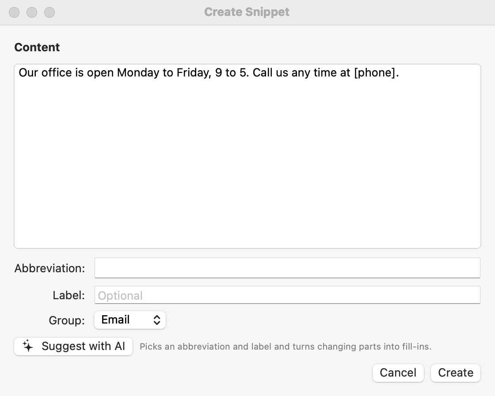

Getting Started
Five minutes from opening Shorthand to your first expansion.
Installing
Open the downloaded Shorthand-x.y.z.dmg and drag Shorthand onto the Applications shortcut. Then open Shorthand from your Applications folder. (Running it straight from the disk image or Downloads works, but it can’t update itself or start at login from there.)
Before you start: the license agreement
The very first time you open Shorthand, it shows its License Agreement. Shorthand is provided “as is,” without warranty. Read it, select I have read and agree…, and click I Agree (or Quit). Nothing starts until you agree. You can read it again any time under Help ▸ License Agreement.
1. The setup window
The first time you open Shorthand, the Welcome to Shorthand window walks you through setup. You can reopen it any time from File ▸ Import Snippets… or Settings ▸ General ▸ Setup & Import….
- Allow Shorthand to watch for abbreviations. Click Grant…, then turn on Shorthand in System Settings ▸ Privacy & Security ▸ Accessibility. The red ✕ next to Accessibility turns into a green check mark within a second or two.
- Turn off TextExpander (only shown if it’s running), so abbreviations don’t expand twice.
- Import your TextExpander snippets, if you have them. See Importing.
- When should abbreviations expand? Pick one of the three choices; see expansion modes. If you’re coming from TextExpander, use the same setting you had there.
- Click Done.
When you click Done, Shorthand asks Protect Shorthand? and offers to encrypt your snippets and lock its windows. Choose what you like, or click Not Now; you can change it any time in Settings ▸ Security. See Security & Encryption.
Shorthand needs Accessibility permission to notice abbreviations. It looks only for your abbreviations and never sends your typing anywhere. See Privacy, Blocklist & Permissions.
2. Try it
Shorthand starts with two example snippets in a group called My Snippets:
| Type | Content | You get |
|---|---|---|
ddate then a space | %B %e, %Y | November 1, 2026 |
ttime then a space | %1I:%M %p | 9:41 AM |
Open TextEdit or Notes, type ddate and press the space bar.
3. Make your own snippet
- Click the Shorthand icon in the menu bar and choose Open Shorthand.
- Pick a group in the sidebar, then choose File ▸ New Snippet (⌘N) or click the + New Snippet toolbar button.
- Type the text you want in the big box, for example your email signature.
- In Abbreviation:, type something short you’d never type by accident, like
;sig. - That’s it. Changes save automatically. Type
;sigand a space anywhere.
Start abbreviations with a character such as ; or , so they never fire in the middle of ordinary words.
Quicker ways to create a snippet

- Select text in any app and choose Create Snippet from Selection… from the menu bar icon.
- Copy text, then choose Create Snippet from Clipboard….
- In the Create Snippet window, click Suggest with AI to have AI pick an abbreviation and label (needs AI set up).
Settings
Open Settings with the gear button at the top right of the main window, from Shorthand ▸ Settings… (⌘,) when a Shorthand window is in front, or by choosing Preferences… from the menu bar icon. They all open the same window, with nine tabs: Expansion, Options, AI, Privacy, Security, Team, Hotkeys, General, and License. This help refers to it as Settings.
In General you can also choose Launch at login, Show Shorthand in menu bar and Show main window at launch.
Next steps
- Fill-ins: snippets that ask for a name or a choice.
- Search, Menus & Hotkeys: insert snippets without remembering them.
- Snippets & Groups: organize your library.
- Tags, Trash & Multi-Select: tag snippets, work on many at once, and restore deleted ones.
- Template Packs: add ready-made groups of snippets in one click.